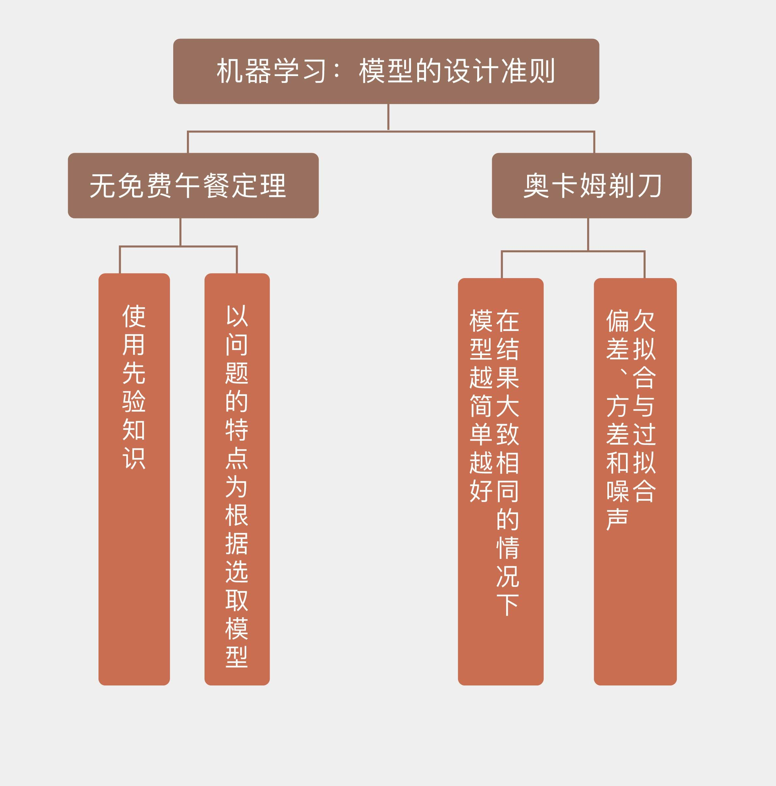

- 00 开篇词 打通修炼机器学习的任督二脉.md.html
- 01 频率视角下的机器学习.md.html
- 02 贝叶斯视角下的机器学习.md.html
- 03 学什么与怎么学.md.html
- 04 计算学习理论.md.html
- 05 模型的分类方式.md.html
- 06 模型的设计准则.md.html
- 07 模型的验证方法.md.html
- 08 模型的评估指标.md.html
- 09 实验设计.md.html
- 10 特征预处理.md.html
- 11 基础线性回归：一元与多元.md.html
- 12 正则化处理：收缩方法与边际化.md.html
- 13 线性降维：主成分的使用.md.html
- 14 非线性降维：流形学习.md.html
- 15 从回归到分类：联系函数与降维.md.html
- 16 建模非正态分布：广义线性模型.md.html
- 17 几何角度看分类：支持向量机.md.html
- 18 从全局到局部：核技巧.md.html
- 19 非参数化的局部模型：K近邻.md.html
- 20 基于距离的学习：聚类与度量学习.md.html
- 21 基函数扩展：属性的非线性化.md.html
- 22 自适应的基函数：神经网络.md.html
- 23 层次化的神经网络：深度学习.md.html
- 24 深度编解码：表示学习.md.html
- 25 基于特征的区域划分：树模型.md.html
- 26 集成化处理：Boosting与Bagging.md.html
- 27 万能模型：梯度提升与随机森林.md.html
- 28 最简单的概率图：朴素贝叶斯.md.html
- 29 有向图模型：贝叶斯网络.md.html
- 30 无向图模型：马尔可夫随机场.md.html
- 31 建模连续分布：高斯网络.md.html
- 32 从有限到无限：高斯过程.md.html
- 33 序列化建模：隐马尔可夫模型.md.html
- 34 连续序列化模型：线性动态系统.md.html
- 35 精确推断：变量消除及其拓展.md.html
- 36 确定近似推断：变分贝叶斯.md.html
- 37 随机近似推断：MCMC.md.html
- 38 完备数据下的参数学习：有向图与无向图.md.html
- 39 隐变量下的参数学习：EM方法与混合模型.md.html
- 40 结构学习：基于约束与基于评分.md.html
- 如何成为机器学习工程师？.md.html
- 总结课 机器学习的模型体系.md.html
- 总结课 贝叶斯学习的模型体系.md.html
- 结课 终有一天，你将为今天的付出骄傲.md.html
- 捐赠
06 模型的设计准则
上学时你一定过学习新知识的经历：首先要结合老师的讲解进行消化理解，接着要做些练习题找到问题并加强巩固，最后通过考试来检验学习的最终效果。机器学习需要根据问题特点和已有数据确定具有最强解释性或预测力的模型，其过程也可以划分为类似于“学习-练习-考试”这样的三个阶段，每个阶段的目标和使用的资源可以归纳如下：
模型拟合（model fitting）：利用训练数据集（training set）对模型的普通参数进行拟合；
模型选择（model selection）：利用验证数据集（validation set）对模型的超参数进行调整，筛选出性能最好的模型；
模型评价（model assessment）：利用测试数据集（test set）来估计筛选出的模型在未知数据上的真实性能。
接下来的三篇文章将分别围绕模型处理这三个阶段展开论述，首先将从模型拟合开始。
虽然模型拟合的任务是计算未知的参数，但它还要解决一个更重要的问题，就是在拟合参数前确定模型的形式，或者说到底要拟合哪些参数。模型拟合本身只是简单的数学问题，交给计算机就可以万事大吉，可模型设计却颇有门道，涉及到更多的思考：一方面，模型的合理性很大程度上取决于待解决问题本身的特征；另一方面，模型的复杂度也要和问题的复杂度相匹配。在机器学习中，对这两个基本准则的理解催生了两个基本的规律，分别是无免费午餐定理和奥卡姆剃刀原则。
“天下没有免费的午餐”是人尽皆知的俗语，这朴素的道理在机器学习中同样适用。通俗地说，无免费午餐（No Free Lunch, NFL）定理证明了任何模型在所有问题上的性能都是相同的，其总误差和模型本身是没有关系的。
这样的结论好像有些反直觉：既然大家谁都不比谁好，那关于机器学习算法和模型不计其数的研究又有什么意义呢？其实这种想法误解了NFL定理的一个核心前提，也就是每种问题出现的概率是均等的，每个模型用于解决所有问题时，其平均意义上的性能是一样的。
所有模型在等概率出现的问题上都有同样的性能，这件事可以从两个角度来理解：一是从模型的角度来看，如果单独拿出一个特定的模型来观察的话，这个模型必然会在解决某些问题时误差较小，而在解决另一些问题时误差较大；二是从问题的角度来看，如果单独拿出一个特定的问题来观察的话，必然有某些模型在解决这些问题时具有较高的精度，而另一些模型的精度就没那么理想了。
如果把不同模型看成一个班级里的不同学生，不同问题看成考试时的不同科目，NFL定理说的就是在这个班里，所有学生期末考试的总成绩都是一样的，既然总成绩一样，每一科的平均分自然也是一样的。这一方面说明了每个学生都有偏科，数学好的语文差，语文好的数学差，如果数学语文都好，那么英语肯定更差；另一方面也说明了每个科目的试题都有明显的区分度，数学有高分也有低分，语文有高分也有低分，不会出现哪一科上大家都是90分或者大家都是30分的情形。
NFL定理最重要的指导意义在于先验知识的使用，也就是具体问题具体分析。机器学习的目标不是放之四海而皆准的通用模型，而是关于特定问题有针对性的解决方案。因此在模型的学习过程中，一定要关注问题本身的特点，也就是关于问题的先验知识。这就像学习数学有学习数学的方法，这套方法用来学习语文未必会有良好的效果，但它只要能够解决数学的问题就已经很有价值了。脱离问题的实际情况谈论模型优劣是没有意义的，只有让模型的特点和问题的特征相匹配，模型才能发挥最大的作用。
相比于1995年提出的NFL定理，奥卡姆剃刀可谓历史悠久，它诞生于公元14世纪圣方济各会修士奥卡姆的威廉笔下。在机器学习的场景下，奥卡姆剃刀（Occam’s Razor）可以理解为如果有多种模型都能够同等程度地符合同一个问题的观测结果，那就应该选择其中使用假设最少的，也就是最简单的模型。尽管越复杂的模型通常能得到越精确的结果，但是在结果大致相同的情况下，模型就越简单越好。
奥卡姆剃刀是人类思维的一种直观的体现，你我在不经意间都会用到它：当看到1，2，4，8这几个数时，对下一个出现的数字，你的第一反应一定是16，因为这一系列数字里蕴含的最简单的规律是等比数列关系，而不是什么包含十几二十个参数的高阶多项式，这个复杂的结果直接被头脑中的那把剃刀无意识地砍掉了。
在科学方法中，奥卡姆剃刀对简单性的偏好并非逻辑上不可辩驳的金科玉律，它更多的是基于可证伪性的标准。一个问题存在多个可接受的模型，其中的每一个都可以演化出无数个更为复杂的变体，其原因在于可以把任何解释中的错误归结于某种特例的出现，将这个特例纳入模型就可以避免原来错误的发生。更多特例的引入无疑会降低模型的通用性和可解释性，把薄薄的教材变成厚重的词典，这就是奥卡姆剃刀偏爱简单模型的原因。
本质上说，奥卡姆剃刀的关注点是模型复杂度。机器学习学到的模型应该能够识别出数据背后的模式，也就是数据特征和数据类别之间的关系。当模型本身过于复杂时，特征和类别之间的关系中所有的细枝末节都被捕捉，主要的趋势反而在乱花渐欲迷人眼中没有得到应有的重视，这就会导致过拟合（overfitting）的发生。反过来，如果模型过于简单，它不仅没有能力捕捉细微的相关性，甚至连主要趋势本身都没办法抓住，这样的现象就是欠拟合（underfitting）。
过拟合也好，欠拟合也罢，都是想避免却又无法避免的问题。在来自真实世界的数据中，特征与类别之间鲜有丁是丁卯是卯的明确关系，存在的只是在诸多特征织成的罗网背后若即若离、若隐若现的相关性。用较为简单的模型来模拟复杂的数据生成机制，欠拟合的发生其实是不可避免的。可欠拟合本身还不是更糟糕的，更糟糕的是模型虽然没有找到真正的相关性，却自己脑补出一组关系，并把自己的错误的想象当做真实情况加以推广和应用，得到和事实大相径庭的结果——其实就是过拟合。
模型复杂度与拟合精度之间的关系可以这么来理解：过于简单的模型就像给三五百人一起上大课，不管听课的学生水平如何参差不齐，上课的内容都固定不变，或者变化很小。这种教学的效果一定不好：水平高的学生不用听也会，水平差的学生听了也不会，就像欠拟合的模型在训练集上都没有良好的表现，更遑论泛化性能了。
相比之下，过于复杂的模型则是一对一的闭门辅导，针对每个学生不同的问题做出不同的解答，数学不好的补数学，语文不好的补语文。这样因材施教的教学效果固然优良，却因为它的针对性而没法推广，就像过拟合的模型能够在训练集上表现优异，却因为针对性过强，同样不具备良好的泛化性能。
模型的复杂度也可以从误差组成的角度一窥端倪。在“人工智能基础课”的第一季中曾介绍过，模型的误差包括三个部分：偏差（bias），方差（variance）和噪声（noise）。
三者中的噪声也叫作不可约误差（irreducible error），体现的是待学习问题本身的难度，并不能通过模型的训练加以改善。噪声来源于数据自身的不确定性，如果按照\(y = x + \\epsilon, \\epsilon ~ N(0, \\sigma)\)生成数据，并对生成的数据进行线性拟合的话，高斯噪声的方差\(\\sigma ^ 2\)就属于不可约误差。噪声的方差\(\\sigma ^ 2\)越大，线性拟合的难度也就越高。
除了噪声之外，偏差和方差都与模型本身有关，两者对误差的影响可以用误差的偏差-方差分解（bias-variance decomposition）来表示。偏差的含义是模型预测值的期望和真实结果之间的区别，如果偏差为0，模型给出的估计的就是无偏估计。但这个概念是统计意义上的概念，它并不意味着每个预测值都与真实值吻合。方差的含义则是模型预测值的方差，也就是预测值本身的波动程度，方差越小意味着模型越有效。抛开噪声不论，模型的误差就等于偏差的平方与方差之和。
偏差和方差之间的折中与模型自身的特性息息相关。偏差来源于模型中的错误假设，偏差过高就意味着模型所代表的特征和分类结果之间的关系是错误的，对应着欠拟合现象；方差则来源于模型对训练数据波动的过度敏感，方差过高意味着模型对数据中的随机噪声也进行了建模，将本不属于特征-分类关系中的随机特性也纳入到模型之中，对应着过拟合现象。
根据上面的理解，就不难得到结论：理想的模型应该是低偏差低方差的双低模型，就像一个神箭手每次都能将箭射进代表10环的红心之内；应该避免的模型则是高偏差高方差的双高模型，这样的箭手能射得箭靶上到处窟窿，却没有一个哪怕落在最外层的圆圈里。更加实际的情形是偏差和方差既不会同时较低，也不会同时较高，而是在跷跷板的两端此起彼伏，一个升高另一个就降低。
一般说来，模型的复杂度越低，其偏差也就越高；模型的复杂度越高，其方差也就越高。比较简单的模型像是个斜眼的箭手，射出的箭都在远离靶心的7环的某一点附近；比较复杂的模型则是个心理不稳定的箭手，本来是9环水平却一下射出10环一下射出8环。对模型复杂度的调整就是在偏差-方差的折中中找到最优解，使得两者之和所表示的总误差达到最小值。这样的模型既能提取出特征和分类结果之间的关系，又不至于放大噪声和干扰的影响。
今天我和你分享了在设计机器学习的模型时，需要考虑的一些共性问题，其要点如下：
无免费午餐定理说明模型的选取要以问题的特点为根据；
奥卡姆剃刀说明在性能相同的情况下，应该选取更加简单的模型；
过于简单的模型会导致欠拟合，过于复杂的模型会导致过拟合；
从误差分解的角度看，欠拟合模型的偏差较大，过拟合模型的方差较大。
在实际应用中，欠拟合和过拟合是不太可能同时被抑制的，现实的考量是“两害相权取其轻”。那么你认为是应该优先控制欠拟合还是过拟合呢？
欢迎发表你的观点。

© 2019 - 2023 Liangliang Lee. Powered by gin and hexo-theme-book.